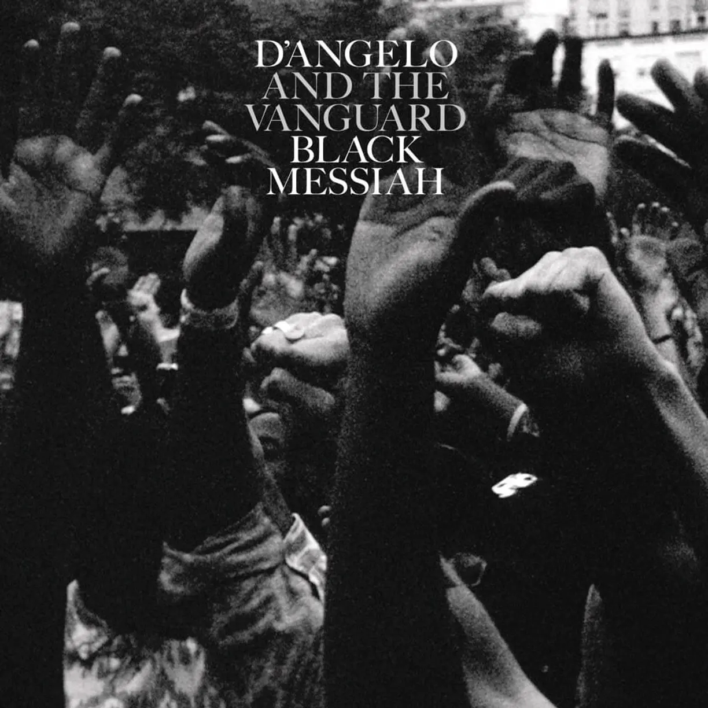
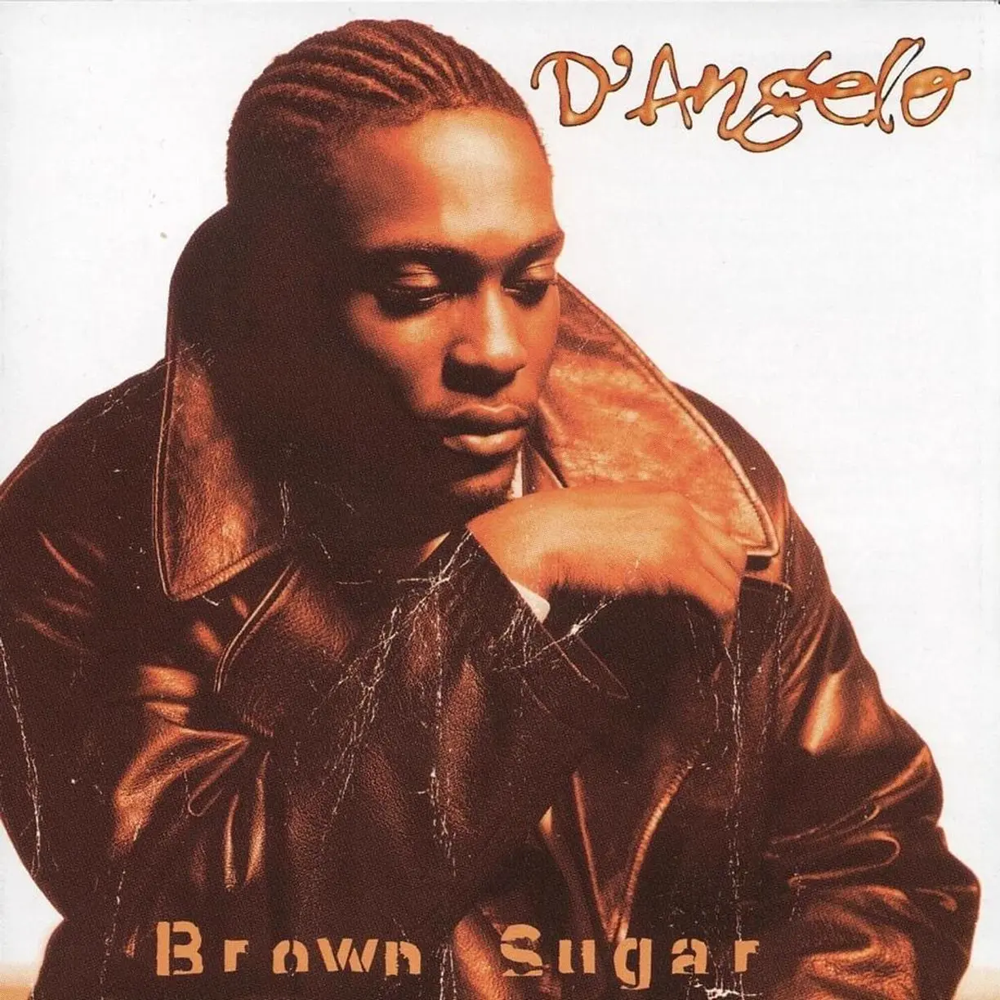

Album#7
Brown Sugar & Black Messiah
{kind=link}

专辑信息
之前分享了 D'Angelo 的 Voodoo，我把他另外两张专辑找来听了听，一张是 Voodoo 之前的 Brown Sugar，一张是 Voodoo 之后的 Black Messiah。
听了 Voodoo 之后再听 Brown Sugar，会觉得 Brown Sugar 的器乐有点「生硬」、有些严丝合缝，缺少 Voodoo 里的松散感。而 Black Messiah 则继承了 Voodoo 的松散感。
表达上，Brown Sugar 更多的是一些情歌，而 Black Messiash 除了情歌，还涉及到宗教、信仰、自我坚持、平等……，表达更丰富一些。
Voodoo 虽然我听了很多遍，但我还是很难想起里面任何一首歌的旋律，它真的就如一次现场的即兴表演，你只能感受它，享受它。
相比而言，这两张专辑都有一些我能记住旋律的歌曲，例如 Brown Sugar 中的 Brown Sugar 、 Shit,Damn,Motherfucker 、 Black Messiah 中的 Really Love 、 Back to the Future(Part I) 、 The Door 。
相比 Brown Sugar，我更喜欢 Black Messiah，而 Voodoo，任何时候拿出来听一听都是很让人享受的。
lyrics & review
-
[Verse 2]
Ever hit with a choice that you can't decide?
Direction left or right, mm
Shut your mouth off and focus on what you feel inside
See y'all know I'ma go with my vibe, uh
You won't believe all the things you have to sacrifice
Just to get peace of mind, oh
And you take what they give as if it did suffice
Still it's just a waste of time
Uh, I offer you the truth
You need the comfort of my lovin' to bring out the best in you
I wanna give you something (I wanna give you)
To feed your mind (To feed your mind)
Separating, don't debate it (Separatin')
Faithfully we'll see this love through
-
Black people need some peace, white people need some peace
And we are going to have to fight, we're going to have to struggle
…
I won't nut up when we up thick in the crunch
Because a coward dies a thousand times
But a soldier only dies just once
前奏有一段像是扩音喇叭音效的演讲？宣告？
会让我想到 John Lennon 的声音，那种竭力喊出来的感觉。（例如 John 在 Well Well Well 中的唱腔）
这是一首为黑人同胞发声，抗争的歌。
-
[Chorus]
All we wanted was a chance to talk
'Stead we only got outlined in chalk
Feet have bled a million miles we've walked
Revealing at the end of the day, the charade
这首歌会让我想到 双城之战 里金克丝这样的角色和团体；也会想到最近看的 一战再战 里的反抗组织，或许片头的某个片段用这首歌作为 BGM 也很合适。
现场版 里也是举着拳头，给人一种奋起反抗的感觉，偶尔还会听到一声「啪」的声音，如果你看现场版的视频的话，它就像在开枪射击，或许是在表达反抗者被枪击？
这首歌的旋律我也很喜欢。
这只是表明这种事情还在持续，因为我写这首歌的时候，Trayvon Martin 事件甚至都还没发生。我们仍然在街上抗议同样的事情，这太疯狂了。那首歌就是关于社会现状的 ⸺ 当我说「一个对话的机会」时，这意味着一个坐下来行使我们本应拥有的权利的机会。
-
[Chorus]
Girl's got a worldly view
Apparently she sees through you
Her love was never meant to share for two
She said "I'll do it if you'll be my sugar daddy"
Sugah Daddy，指包养女人的大龄男性。(另见 Sugar dating)
-
旋律好听的一首，前奏有一段女人说的话，给人一种电影般的故事感：
女孩（署名为 Gina Figueroa）告诉她的爱人，尽管她爱他，但她厌恶他过度占有的本性，因此很难信任他。这与 D'Angelo 描绘的爱人总是陪伴在他身边的画面截然相反。
这些歌词的大致翻译是：
是啊，你爱我吗？我非常爱你。我们在一起的所有时光。我想说的是 ⸺ 你正在毁掉我的生活。我不想和你争吵。我只想爱你。但你太嫉妒了。你想成为我的主人。但我很自由。你想成为我的国王吗？我，你的王后？我不知道我是否信任你。但我非常爱你。
深情浪漫的一首歌。
-
专辑里我最喜欢的一首，很喜欢那段弦乐。
So if you're wondering, what about the shape I'm in
I hope it ain't my abdomen that you're referrin' to
This what I want y'all to listen to
Untitled (How Does It Feel) 的 MV 给他带来很多困扰，去现场听歌的人只想让他脱衣服，看他的身体，却忽略了他的音乐。
所以在歌词里，他说，「如果你们想知道，我现在的样子怎么样，我希望你指的不是我的腹部，这是我希望你们听的」。
Season may come when your luck just may run out
And all that you'll have is a memory, oh
-
Questions that call to us, we all reflect upon
Where do we belong? Where do we come from?
Questions that call to us, we all reflect upon
'Til it's done
'Til it's done
-
这首歌能听出来节奏上很明显的一瘸一拐的感觉。
[Verse 2]
I know that he will try to harm you
And if you care
I know that you will make it to the promised land, oh
But you gotta pray, you gotta pray
Oh, you gotta pray for redemption, Lord
Lord, keep me away from temptation
Deliver us from evil, oh yeah
[Refrain]
And all this confusion around me
Give me peace
I believe in love
-
专辑里比较喜欢的一首，「i will never betray my heart」，歌词看起来像是对爱人的宣誓，其实也是对自己的宣誓。
歌曲后段的小号也是听起来非常舒服。
-
I told you once but twice
You wasn't very nice
In your hands you held my life
I told you once but twice, my love
Don't lock yourself out that door, no, no, no
Don't lock yourself out that door
也是喜欢的一首，简单的歌词，轻松的口哨，舒服。
-
衔接了 Back to the Future (Part I) 的旋律，不太知道为什么要拆一个 Part II 出来。
Used to get real high
Now I'm just getting a buzz
Used to get real high
Now I'm just getting a buzz
Used to get real high
Now I'm just getting a buzz
这段歌词似乎是暗示了吸食毒品，以前吃一点就爽飞，现在需要更多，才能达到原来的感觉。也可能指代别的什么。
-
[Bridge]
It's another reason for the season
I don't wanna break your heart
Oh, in another life (Ooh, yeah)
I bet you were my girl, oh
专辑里有两首 Back to the Future，或许真的有某些遗憾吧，想回到某个时候。就算无法回去，心里也安慰自己，或许在另一个平行时空，有另一种生活，而在那个生活里，一切都是美满的，如愿的。
{kind=link}

专辑信息
Brown Sugar 还有一个 Deluxe Edition，包括 Brown Sugar 和 Me and Those Dreamin' Eyes of Mine 的无伴奏合唱 (Acapella) 版本；Brown Sugar 的另一个版本， Cruisin' 的另一个混音版本；以及来自不同人的混音版本。
lyrics & review
-
尽管初听之下可能觉得如此，但 Brown Sugar 并非一首关于深肤色女性的情歌。这首歌是献给大麻的颂歌，特指同名的 Strain: Brown Sugar F1。这与 Rick James 在 1978 年的经典歌曲 Mary Jane 中使用的拟人化手法如出一辙。
-
我为她（前女友）写的第一首歌是 Alright 。
伙计，我对她的感情是如此之深。
我没有写信，而是给她写歌。
通过为她写歌，我整理出了后来成为我的小样的素材。
Source
-
Jonz in My Bonz 是一首性感歌曲，D'Angelo 在其中表达了他对心爱女人的渴望。「Jones」一词意为「强烈的欲望或渴求」；在 D'Angelo 的歌中，指的是他的女人。
Me and Those Dreamin’ Eyes of Mine
在 Brown Sugar 的第四首单曲中，D'Angelo 表达了他对长期暗恋对象的感情，希望能最终采取行动追求她。
-
Shit, Damn, Motherfucker 讲述了一个男人回家发现妻子和自己最好的朋友躺在床上。他一怒之下开枪打死了他们，导致自己被捕。歌词直白，情节简单，但 D'Angelo 的演唱极富表现力，让你能体验到主人公在思考这场磨难时所经历的全部情感。
伙计，在我老家，这种事经常发生。然后你看看电视，你会看到 O.J. 或者 Lorena Bobbitt 的那些破事。不可否认，爱与恨之间只有一线之隔。在歌曲创作方面，我以 Stevie Wonder 为榜样。有时候你会把诗意融入美妙的音乐中，而另一些时候你必须直截了当。Shit, Damn, Motherfucker 这样的歌只是时代的标志。
专辑里我最喜欢的一首。
Erykah Badu 在伦敦演唱会缅怀 D'Angelo，也唱了这首。
The old ones say second death is it occurs the last time someone says your name, the last time someone sings your song, the last time someoen admires your art, the very last time that's the same day you cease to exist on this planet.
The mere thought of you keeps you alive, we will always say your name,
D'Angelo ⸺
-
[Chorus]
Look at you (Yeah)
You're so smooth (Oh)
When I'm around you
I can't keep my cool (Hey, yeah)
-
D'Angelo 的这首 Cruisin' 是一首慢板情歌，翻唱自 Smokey Robinson 1979 年的同名热门歌曲。
-
贝斯的旋律好听。
[Verse 2]
When we get by, we'll make it by
When we get by with love
I look in your eyes, I look in your eyes
They're pretty as the skies above (Everything, everything, everything)
Everything, everything, everything is okay
We could make love in the shade
Sip some chocolate lemonade
Sugar, you're so fine, and the journey's fine
And we'll be fine
When we make it by and we get by with love
We'll be fine.
-
[Outro]
You're my lady
My divine lady
You're my lady
Such a wonderful lady
But when people started telling him how they had made babies to that track, he appreciated it more.
-
[Verse 1]
Feels like Heaven, yeah, when I think about you
Sparkin' that love, oh yeah, within my soul, oh
And when I touch you, yeah, I can't describe it
Sending chills, yeah, down to my bones, ooh
…
[Chorus]
'Cause you take me higher (Oh, yeah) than I've ever, ever known (Yeah)
Give me good feeling (Ah, oh, yeah), like a king and queen on a throne (Like a king and queen on a throne)
'Cause you take me higher (Yeah, yeah), further than the stars above (Oh-oh)
Send me in ecstasy, baby (Yeah), with your love (With your love, oh-oh)